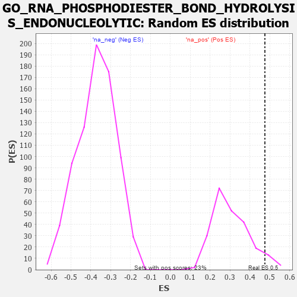

| | | Dataset | 7d |
| Phenotype | NoPhenotypeAvailable |
| Upregulated in class | na_pos |
| GeneSet | GO_RNA_PHOSPHODIESTER_BOND_HYDROLYSIS_ENDONUCLEOLYTIC |
| Enrichment Score (ES) | 0.47546062 |
| Normalized Enrichment Score (NES) | 1.5475539 |
| Nominal p-value | 0.055555556 |
| FDR q-value | 0.25114837 |
| FWER p-Value | 1.0 |
Table: GSEA Results Summary
 Fig 1: Enrichment plot: GO_RNA_PHOSPHODIESTER_BOND_HYDROLYSIS_ENDONUCLEOLYTIC
Fig 1: Enrichment plot: GO_RNA_PHOSPHODIESTER_BOND_HYDROLYSIS_ENDONUCLEOLYTIC
Profile of the Running ES Score & Positions of GeneSet Members on the Rank Ordered List
| PROBE | GENE SYMBOL | GENE_TITLE | RANK IN GENE LIST | RANK METRIC SCORE | RUNNING ES | CORE ENRICHMENT | | 1 | KHNYN | | | 292 | 0.836 | 0.0313 | Yes |
| 2 | BOP1 | | | 330 | 0.768 | 0.0892 | Yes |
| 3 | POP1 | | | 376 | 0.720 | 0.1421 | Yes |
| 4 | RPP25 | | | 401 | 0.699 | 0.1960 | Yes |
| 5 | APEX1 | | | 577 | 0.604 | 0.2232 | Yes |
| 6 | POP5 | | | 585 | 0.599 | 0.2711 | Yes |
| 7 | POP7 | | | 876 | 0.511 | 0.2762 | Yes |
| 8 | BMS1 | | | 984 | 0.487 | 0.3023 | Yes |
| 9 | NOP9 | | | 993 | 0.485 | 0.3408 | Yes |
| 10 | FCF1 | | | 1100 | 0.463 | 0.3652 | Yes |
| 11 | CPSF3 | | | 1237 | 0.440 | 0.3839 | Yes |
| 12 | NOB1 | | | 1284 | 0.433 | 0.4134 | Yes |
| 13 | ENDOV | | | 1491 | 0.391 | 0.4193 | Yes |
| 14 | AGO2 | | | 1767 | 0.343 | 0.4126 | Yes |
| 15 | UTP20 | | | 1882 | 0.322 | 0.4245 | Yes |
| 16 | TSR1 | | | 1944 | 0.314 | 0.4423 | Yes |
| 17 | EXO1 | | | 2002 | 0.304 | 0.4599 | Yes |
| 18 | UTP23 | | | 2309 | 0.259 | 0.4425 | Yes |
| 19 | TBL3 | | | 2379 | 0.248 | 0.4540 | Yes |
| 20 | FEN1 | | | 2446 | 0.237 | 0.4650 | Yes |
| 21 | RCL1 | | | 2531 | 0.222 | 0.4725 | Yes |
| 22 | DBR1 | | | 2642 | 0.207 | 0.4755 | Yes |
| 23 | ERN2 | | | 3160 | 0.129 | 0.4208 | No |
| 24 | DGCR8 | | | 3792 | 0.029 | 0.3437 | No |
| 25 | RRS1 | | | 4256 | -0.051 | 0.2896 | No |
| 26 | SND1 | | | 5244 | -0.256 | 0.1862 | No |
| 27 | KRI1 | | | 6755 | -0.787 | 0.0602 | No |
| 28 | ENDOU | | | 7268 | -1.139 | 0.0885 | No |
Table: GSEA details [plain text format]

Fig 2: GO_RNA_PHOSPHODIESTER_BOND_HYDROLYSIS_ENDONUCLEOLYTIC: Random ES distribution
Gene set null distribution of ES for GO_RNA_PHOSPHODIESTER_BOND_HYDROLYSIS_ENDONUCLEOLYTIC